An Analysis of Indian Culture in Life of Pi by Yann Martel
Reading the novel Life of Pi by Yann Martel has been an eye-opening experience. When I first began reading the book I was expecting it to be boring and primarily just an Indian boy floating in the middle of the ocean with a tiger on board his liferaft. Although I was largely correct in my assumptions the book also gave me significant insight into Indian culture, and a variety of Indian beliefs.

When I analyzed Life of Pi using a Marxist lense it revealed a relationship between the weak and the powerful. In the book, Pi spends the majority of his time surviving in the middle of the ocean with a Bengal tiger, and there is a clear power struggle between them. They build a relationship similar to that of a dictator and a citizen of a country, and in this unhealthy relationship between them, Richard Parker clearly relies on Pi in order to survive in the sea but is only a liability to Pi. Because they are in the middle of the ocean Richard Parker has no way of gathering food for himself and would quickly die on his own, Pi, on the other hand, has fishing equipment and has a steady source of nutrition.

Initially Pi was going to use this to his advantage and wait for the tiger to die from starvation, but soon after realized what would happen if he did. When the tiger became desperate he would look to the only source of food on the boat, Pi, then kill and eat him. Pi has no way to get Richard Parker off the boat and decides that in order to ensure his own survival he must prevent Richard Parker from starving. After this realization Pi begins feeding him a vast majority of the fish he catches and begins to starve, this shows the reality of unhealthy relationships between the powerful and weak in society. Richard Parker relies on Pi in order to survive and takes all the food he needs from him, and Pi is forced to starve and can do nothing about it, showing that in an unhealthy relationship between the weak and the powerful, the powerful depend on the weak, but the weak do not depend on the powerful.
Initially Pi was going to use this to his advantage and wait for the tiger to die from starvation, but soon after realized what would happen if he did. When the tiger became desperate he would look to the only source of food on the boat, Pi, then kill and eat him. Pi has no way to get Richard Parker off the boat and decides that in order to ensure his own survival he must prevent Richard Parker from starving. After this realization Pi begins feeding him a vast majority of the fish he catches and begins to starve, this shows the reality of unhealthy relationships between the powerful and weak in society. Richard Parker relies on Pi in order to survive and takes all the food he needs from him, and Pi is forced to starve and can do nothing about it, showing that in an unhealthy relationship between the weak and the powerful, the powerful depend on the weak, but the weak do not depend on the powerful.
There are many memory moment signposts in Life of Pi because of the unique approach the author took while writing this novel. The book begins with Pi sitting in a hospital bed in Mexico, and thereafter the book is a series of memories beginning with Pi’s childhood growing up in Pondicherry, India. Many of the memory moments presented to the reader while Pi is recalling his childhood are related to his spirituality. While growing up in India Pi explored many different religions, and eventually decided that he would be an agnostic that practiced Hindu, Muslim, and Christian traditions.

One of the most memorable moments was when Pi was a boy growing up in his family’s zoo. Pi’s father wanted to teach Pi about the dangers of the animals that were kept in the zoo and threw a live lamb into Richard Rarker’s pen and made Pi watch him kill it. This becomes significant later on in the novel when Pi is trapped on the liferaft with Richard Parker and Pi is reminded of this memory again and again.
One of the most memorable moments was when Pi was a boy growing up in his family’s zoo. Pi’s father wanted to teach Pi about the dangers of the animals that were kept in the zoo and threw a live lamb into Richard Rarker’s pen and made Pi watch him kill it. This becomes significant later on in the novel when Pi is trapped on the liferaft with Richard Parker and Pi is reminded of this memory again and again.
Something I found interesting about Indian culture when doing research was the Ayurvedic teachings. Ayerdeva is an ancient healing technique used thousands of years ago in India and revolves around the idea of everything being made up of different proportions of the five elements: Earth, Air, Water, Fire, and Space.
 One element of Ayurveda is eating food using your hands. It is believed that each finger contains a different element and using your hands to eat food keeps your body balanced and healthy. In Ayurveda, it is taught that the body and mind are very closely connected and both contribute heavily to your overall health which many modern doctors agree with.
One element of Ayurveda is eating food using your hands. It is believed that each finger contains a different element and using your hands to eat food keeps your body balanced and healthy. In Ayurveda, it is taught that the body and mind are very closely connected and both contribute heavily to your overall health which many modern doctors agree with.
One element of Ayurveda is eating food using your hands. It is believed that each finger contains a different element and using your hands to eat food keeps your body balanced and healthy. In Ayurveda, it is taught that the body and mind are very closely connected and both contribute heavily to your overall health which many modern doctors agree with.
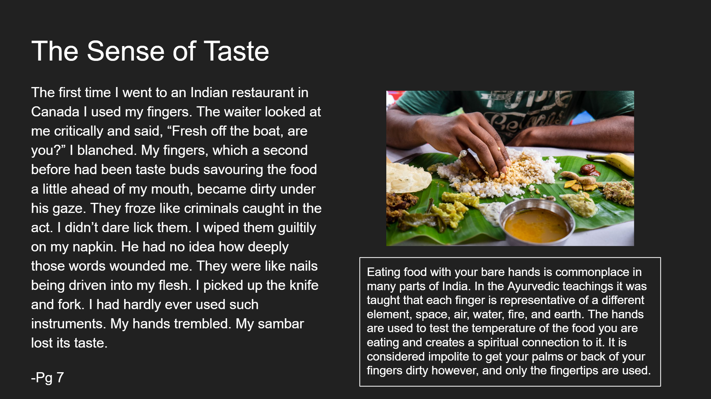 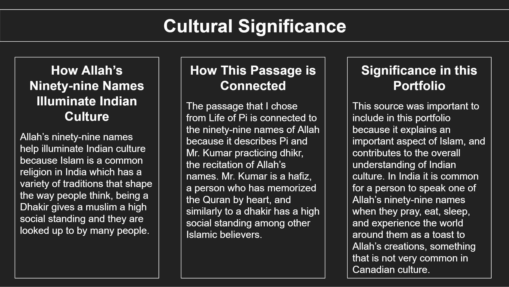 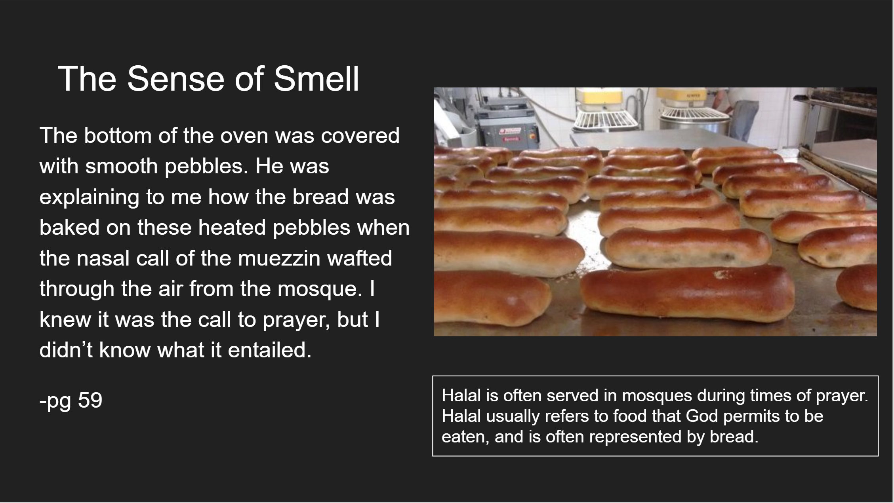 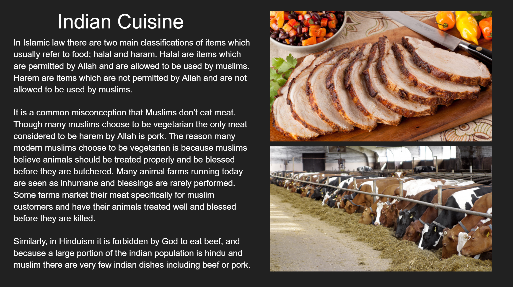 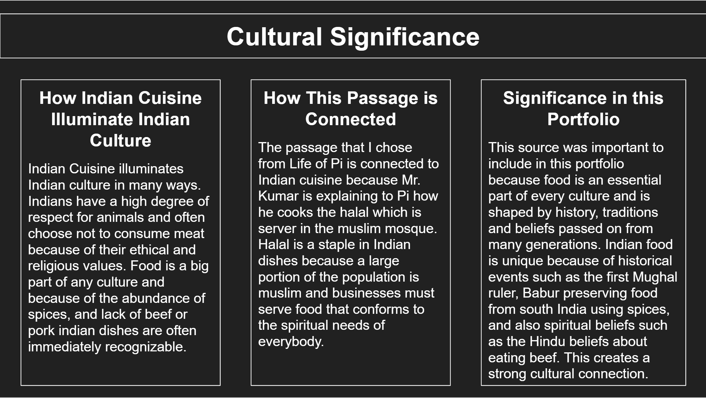 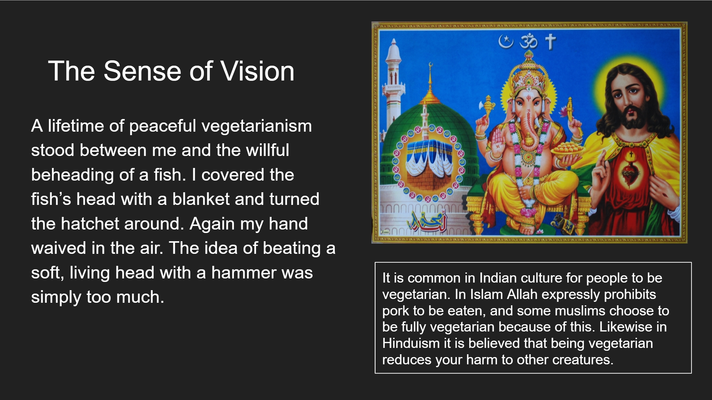 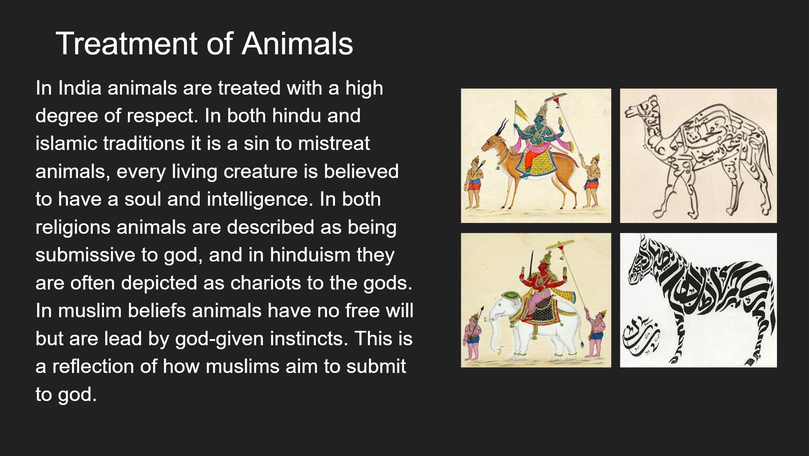 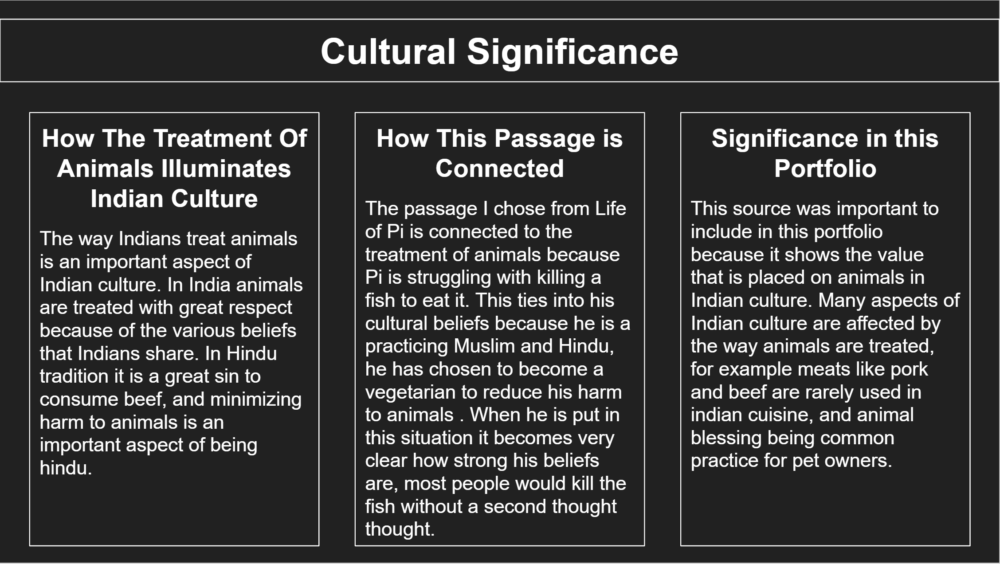 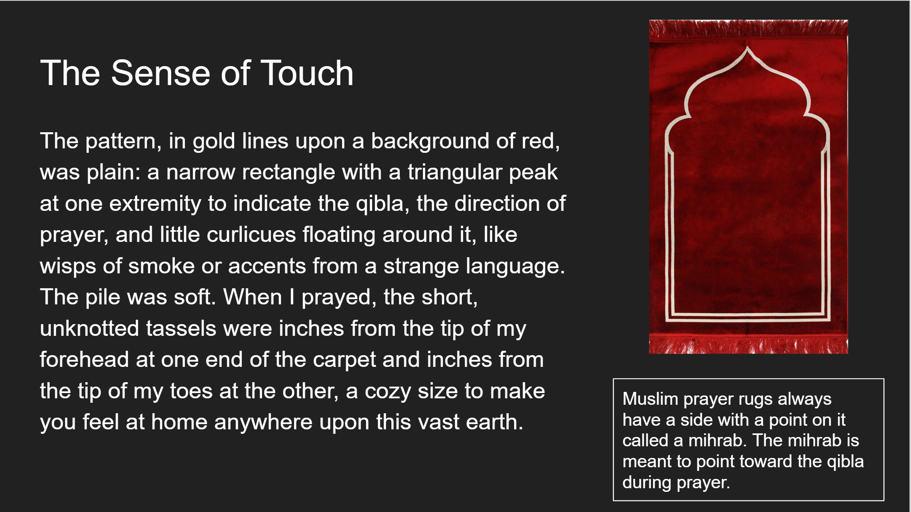 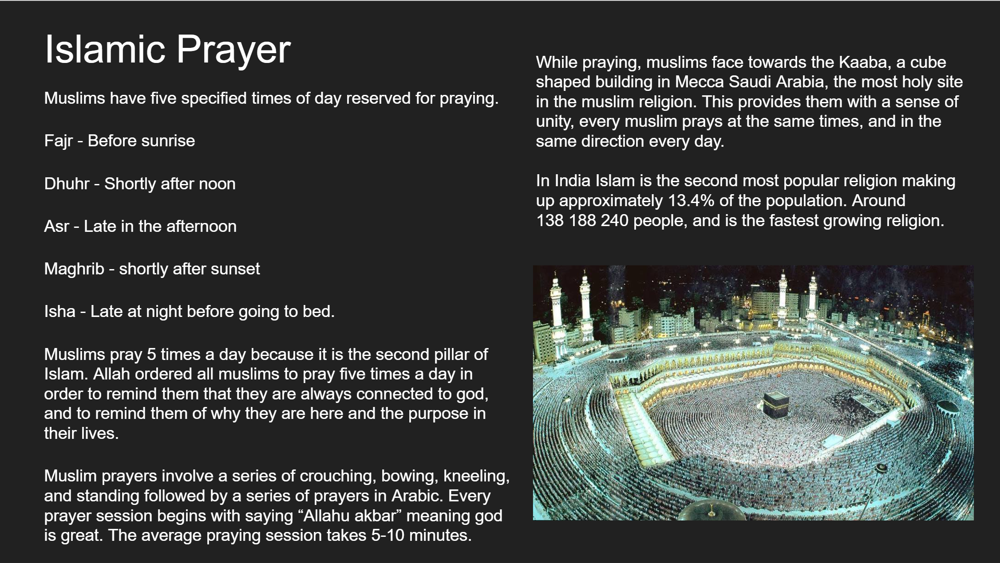 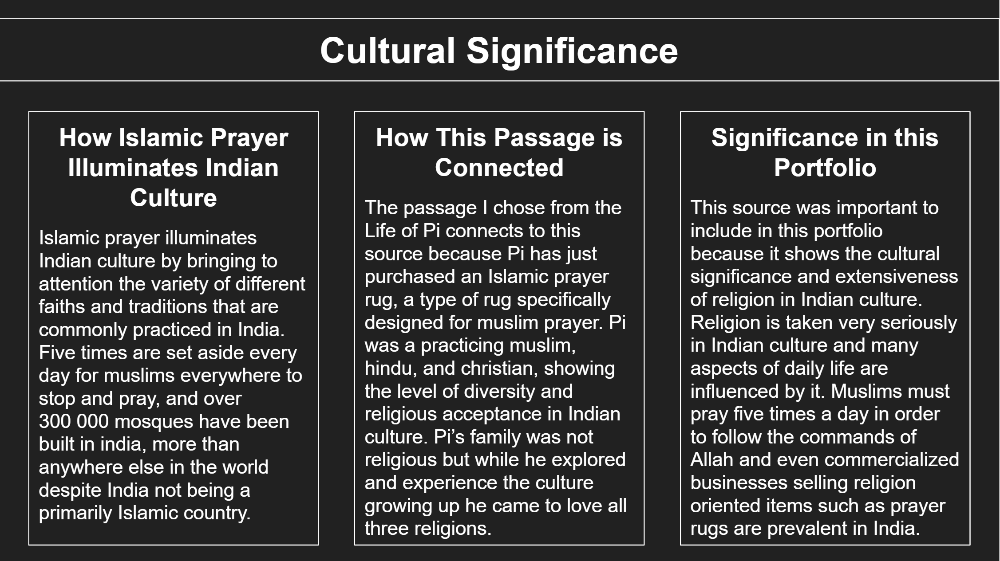